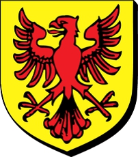

192283082 Earl William de Warenne
* 1081 Lewes, Sussex, England
† 1138-05-11 Lewes, Sussex, England
2nd Earl of Surrey
Blev högst 57 år
* 1081 Lewes, Sussex, England
† 1138-05-11 Lewes, Sussex, England
2nd Earl of Surrey
Blev högst 57 år
384566164 Earl William de Warenne
† 1088
1st Earl of Surrey
† 1088
1st Earl of Surrey
769132328 Rudolf de Warenne
* omkring 1020 Varenne, Normandie, France
† omkring 1074 Varenne, Normandie, France
Blev ca 54 år
* omkring 1020 Varenne, Normandie, France
† omkring 1074 Varenne, Normandie, France
Blev ca 54 år

769132329 Emma Torta de Pont Audemer
* 1018 Bellencombre, Normandie, France
† 1059 Lewes, Sussex, England
Blev högst 41 år
* 1018 Bellencombre, Normandie, France
† 1059 Lewes, Sussex, England
Blev högst 41 år
1538264658 Tourude of Harcourt
* omkring 950 Pont-Audemer, Beaumont, Normandy, Frankrike
† 1040 Preaux, Normandie, France
Blev ca 90 år
* omkring 950 Pont-Audemer, Beaumont, Normandy, Frankrike
† 1040 Preaux, Normandie, France
Blev ca 90 år
1538264659 Wevia de Crepon
* 974 Pont-Audemer, Beaumont, Normandy, Frankrike
† 1031 Pont-Audemer, Beaumont, Normandy, Frankrike
Blev högst 57 år
* 974 Pont-Audemer, Beaumont, Normandy, Frankrike
† 1031 Pont-Audemer, Beaumont, Normandy, Frankrike
Blev högst 57 år
384566165 Gundred
† 1085 Castle Acre, Norfolk, England
† 1085 Castle Acre, Norfolk, England